#102 · hero · horizontal · 2048x1244 · Public domain File:2023-11-10 Bucana Bridge 001.jpg Department of Public Works and Highways (DPWH) · 1280x777 https://commons.wikimedia.org/wiki/File:2023-11-10_Bucana_Bridge_001.jpg#103 · hero · horizontal · 2048x1240 · Public domain File:2023-11-10 Bucana Bridge 002.jpg Department of Public Works and Highways (DPWH) · 1280x775 https://commons.wikimedia.org/wiki/File:2023-11-10_Bucana_Bridge_002.jpg#104 · hero · horizontal · 2048x1152 · Public domain File:2023-11-10 Bucana Bridge 003.jpg Department of Public Works and Highways (DPWH) · 1280x720 https://commons.wikimedia.org/wiki/File:2023-11-10_Bucana_Bridge_003.jpg
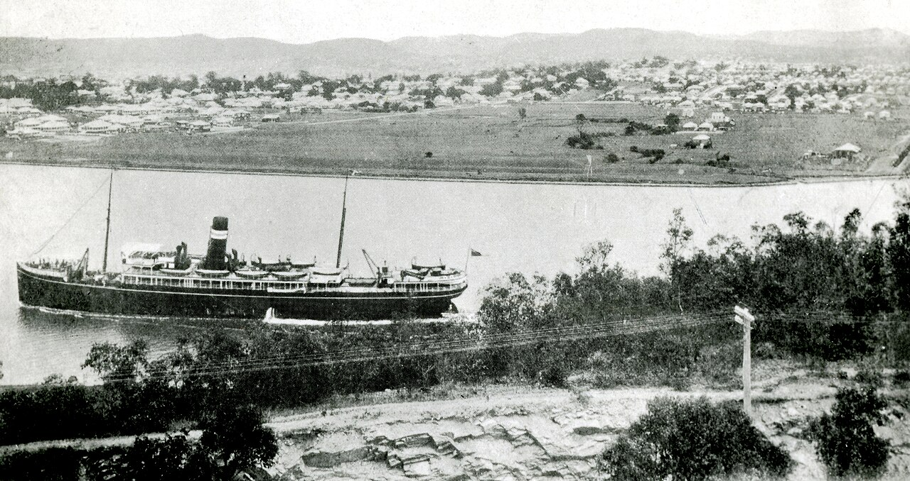
#105 · hero · horizontal · 4148x2198 · Public domain File:BRISBANE-New Farm from Galloways Hill 1909 A554 (44789053364).jpg Queensland State Archives from Runcorn, Queensland, Australia · 1280x678 https://commons.wikimedia.org/wiki/File:BRISBANE-New_Farm_from_Galloways_Hill_1909_A554_(44789053364).jpg#106 · hero · horizontal · 8256x5504 · Public domain File:How Louisiana Native Turned Childhood Wonder into NASA Stennis Career.jpg NASA/Danny Nowlin · 1280x853 https://commons.wikimedia.org/wiki/File:How_Louisiana_Native_Turned_Childhood_Wonder_into_NASA_Stennis_Career.jpg
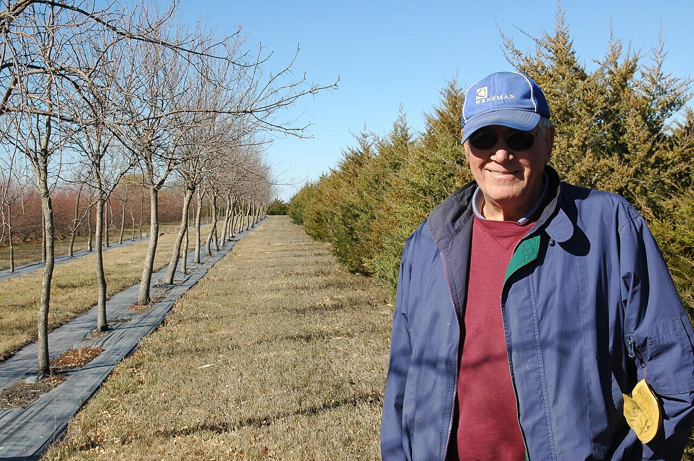
#107 · hero · horizontal · 3008x2000 · Public domain File:Landowner Says Planning and Care Essential for Hardy Shelterbelt (8621828547).jpg USDA NRCS South Dakota · 1280x851 https://commons.wikimedia.org/wiki/File:Landowner_Says_Planning_and_Care_Essential_for_Hardy_Shelterbelt_(8621828547).jpg
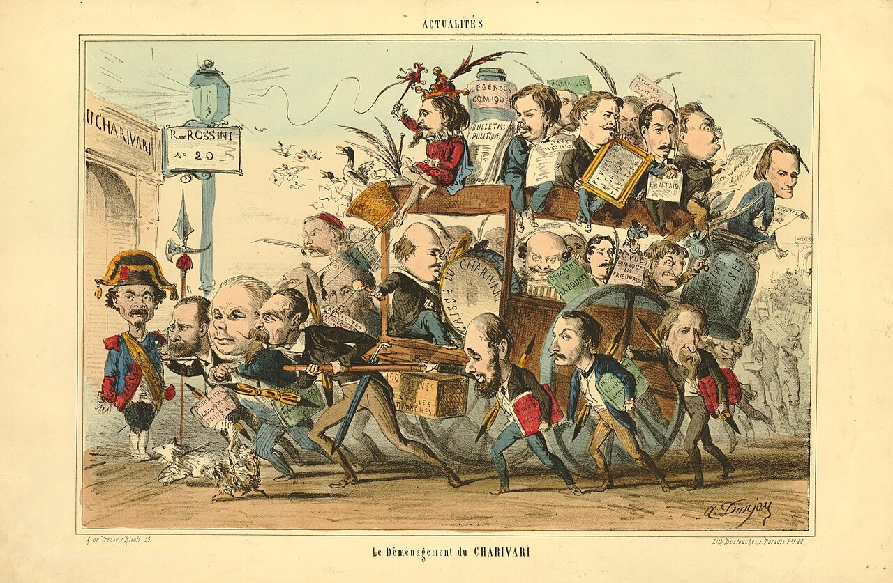
#108 · hero · horizontal · 2500x1634 · Public domain File:Le Déménagement du Charivari (The Move of Charivari) (BM 2000,0521.127).jpg Print made by: Alfred Darjou
Printed by: Destouches
Published by: Arnaud de Vresse · 1280x837 https://commons.wikimedia.org/wiki/File:Le_D%C3%A9m%C3%A9nagement_du_Charivari_(The_Move_of_Charivari)_(BM_2000,0521.127).jpg
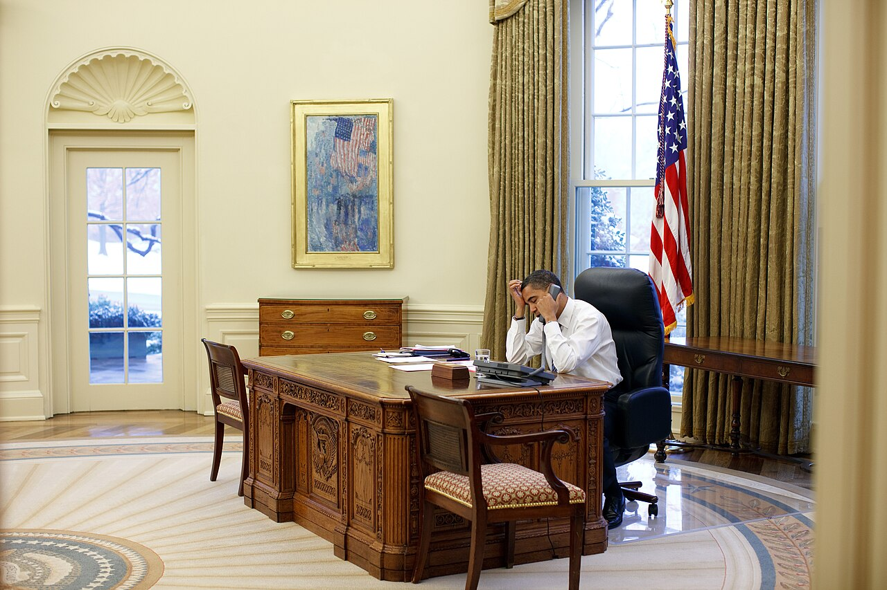
#109 · hero · horizontal · 3500x2333 · Public domain File:Barack Obama working at his desk in the Oval Office.jpg Pete Souza · 1280x853 https://commons.wikimedia.org/wiki/File:Barack_Obama_working_at_his_desk_in_the_Oval_Office.jpg
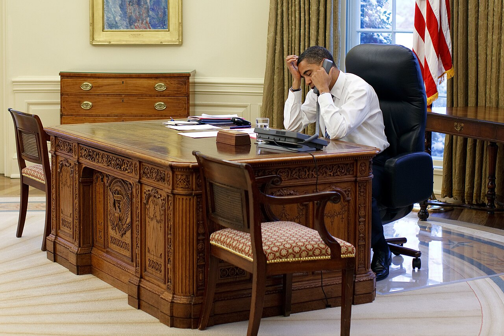
#110 · hero · horizontal · 2199x1467 · Public domain File:Barack Obama working at his desk in the Oval Office (cropped).jpg Pete Souza · 1280x854 https://commons.wikimedia.org/wiki/File:Barack_Obama_working_at_his_desk_in_the_Oval_Office_(cropped).jpg
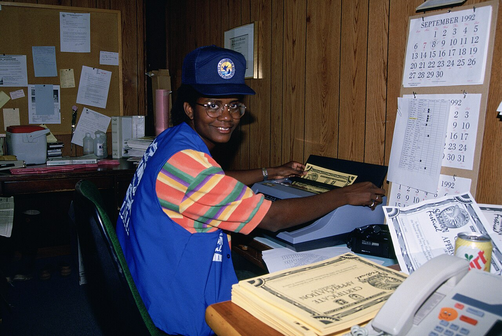
#111 · hero · horizontal · 4028x2700 · Public domain File:Fish and Willife Service volunteer working in office - DPLA - a5bae43aef1c7495f2a066faa0b8761c.jpg Department of the Interior. U.S. Fish and Wildlife Service. National Conservation Training Center. 10/1997-8888 · 1280x858 https://commons.wikimedia.org/wiki/File:Fish_and_Willife_Service_volunteer_working_in_office_-_DPLA_-_a5bae43aef1c7495f2a066faa0b8761c.jpg
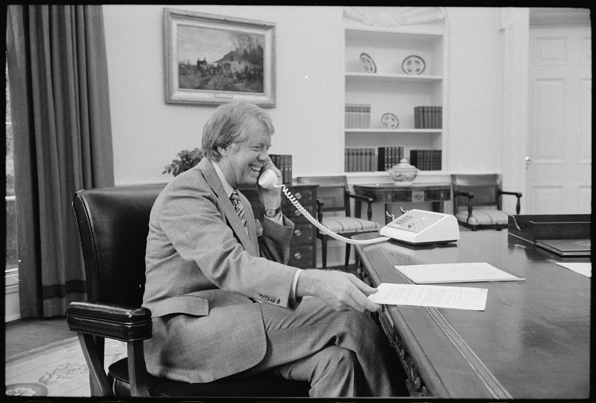
#112 · hero · horizontal · 3000x2032 · Public domain File:Jimmy Carter at his desk in the Oval Office - NARA - 175967.jpg Unknown authorUnknown author or not provided · 1280x867 https://commons.wikimedia.org/wiki/File:Jimmy_Carter_at_his_desk_in_the_Oval_Office_-_NARA_-_175967.jpg
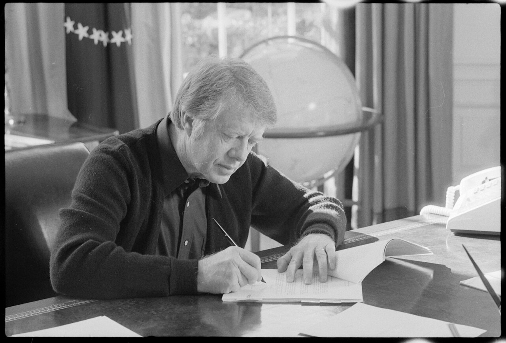
#113 · hero · horizontal · 3000x2032 · Public domain File:Jimmy Carter working at his desk - NARA - 173610.jpg Unknown authorUnknown author or not provided · 1280x867 https://commons.wikimedia.org/wiki/File:Jimmy_Carter_working_at_his_desk_-_NARA_-_173610.jpg
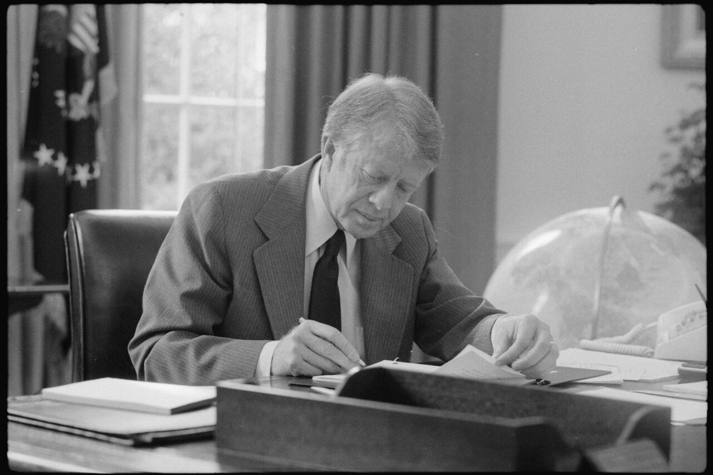
#114 · hero · horizontal · 3000x1999 · Public domain File:Jimmy Carter working at his desk - NARA - 183088.tif Unknown authorUnknown author or not provided · 1280x853 https://commons.wikimedia.org/wiki/File:Jimmy_Carter_working_at_his_desk_-_NARA_-_183088.tif
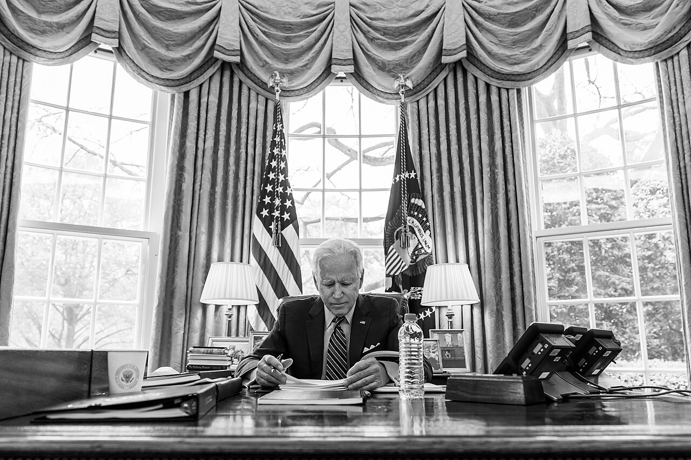
#115 · hero · horizontal · 1600x1066 · Public domain File:P20210421AS-0295-2 (51224514371).jpg The White House · 1280x853 https://commons.wikimedia.org/wiki/File:P20210421AS-0295-2_(51224514371).jpg
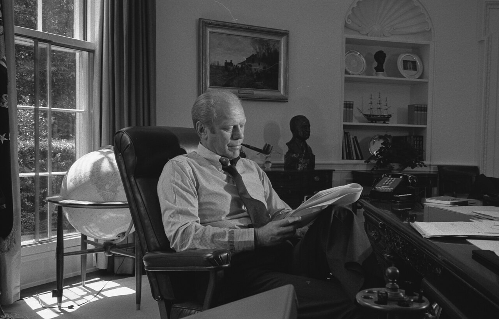
#116 · hero · horizontal · 5998x3837 · Public domain File:Photograph of President Gerald R. Ford Working in the White House Oval Office - NARA - 7282527.jpg Unknown authorUnknown author or not provided · 1280x819 https://commons.wikimedia.org/wiki/File:Photograph_of_President_Gerald_R._Ford_Working_in_the_White_House_Oval_Office_-_NARA_-_7282527.jpg
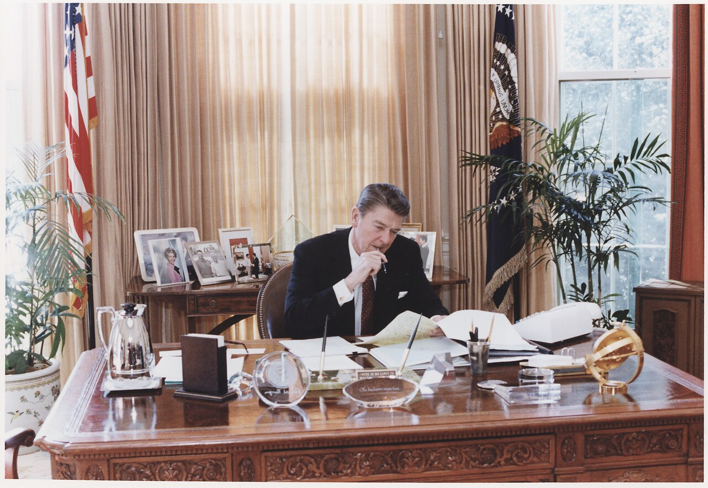
#117 · hero · horizontal · 3000x2068 · Public domain File:Photograph of President Reagan working at his Oval Office desk - NARA - 198526.tif Unknown authorUnknown author or not provided · 1280x882 https://commons.wikimedia.org/wiki/File:Photograph_of_President_Reagan_working_at_his_Oval_Office_desk_-_NARA_-_198526.tif
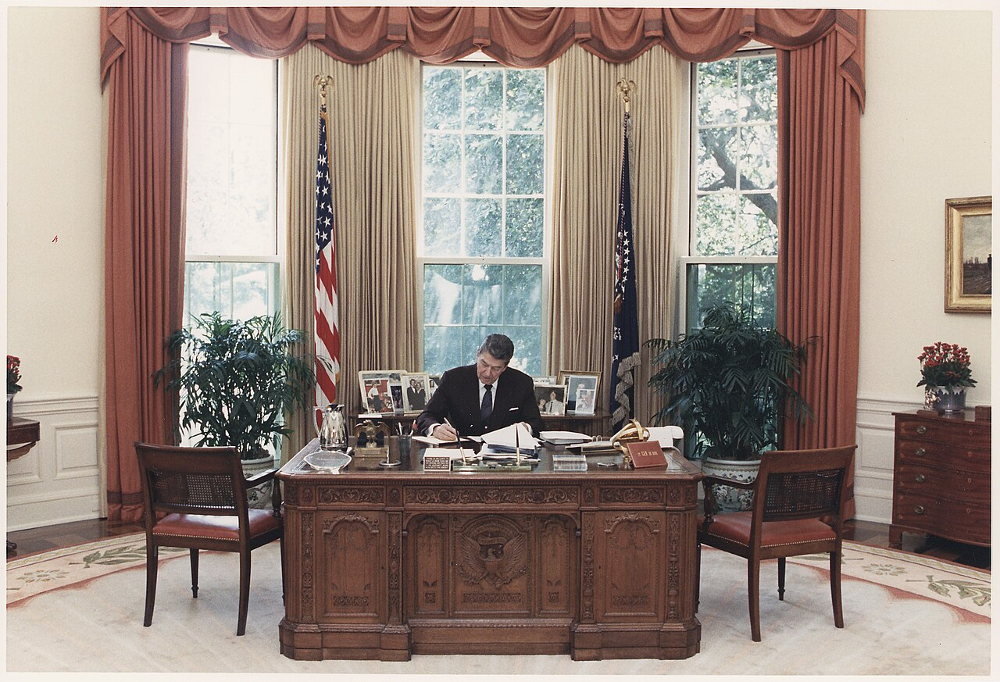
#118 · hero · horizontal · 3000x2047 · Public domain File:Photograph of President Reagan working at his desk in the Oval Office - NARA - 198593.jpg Unknown authorUnknown author or not provided · 1280x873 https://commons.wikimedia.org/wiki/File:Photograph_of_President_Reagan_working_at_his_desk_in_the_Oval_Office_-_NARA_-_198593.jpg
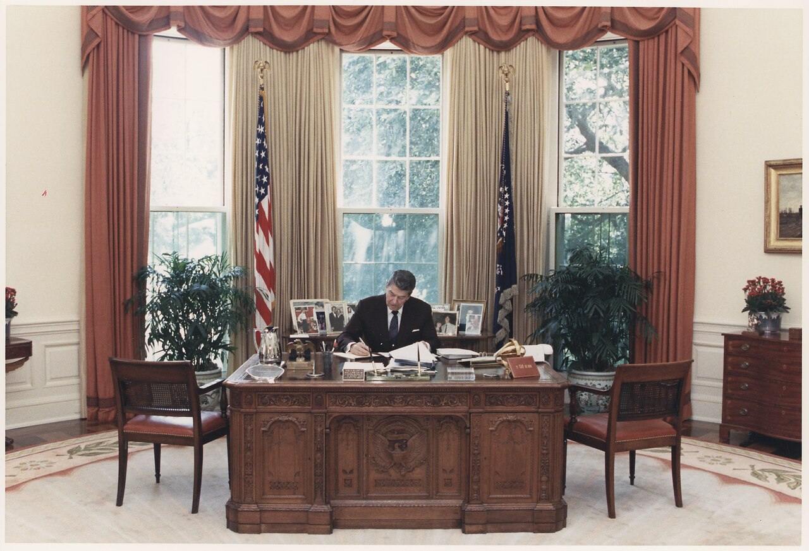
#119 · hero · horizontal · 3000x2047 · Public domain File:Photograph of President Reagan working at his desk in the Oval Office - NARA - 198593.tif Unknown authorUnknown author or not provided · 1280x873 https://commons.wikimedia.org/wiki/File:Photograph_of_President_Reagan_working_at_his_desk_in_the_Oval_Office_-_NARA_-_198593.tif
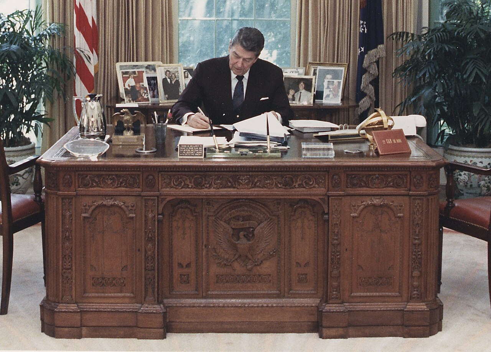
#120 · hero · horizontal · 1544x1108 · Public domain File:Photograph of President Reagan working at his desk in the Oval Office - NARA - 198593 (cropped).jpg Unknown authorUnknown author or not provided · 1280x919 https://commons.wikimedia.org/wiki/File:Photograph_of_President_Reagan_working_at_his_desk_in_the_Oval_Office_-_NARA_-_198593_(cropped).jpg
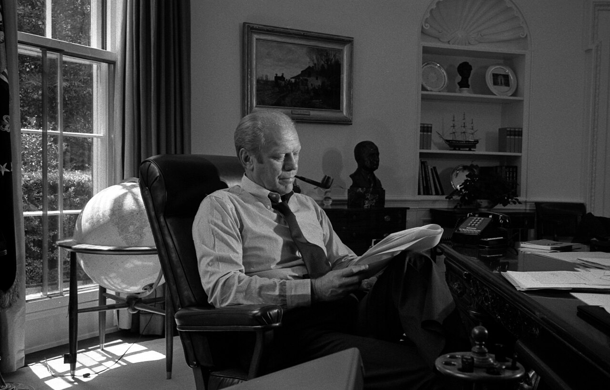
#121 · hero · horizontal · 5998x3837 · Public domain File:President Gerald Ford working at the Oval Office.jpg Courtesy Gerald R. Ford Library · 1280x819 https://commons.wikimedia.org/wiki/File:President_Gerald_Ford_working_at_the_Oval_Office.jpg
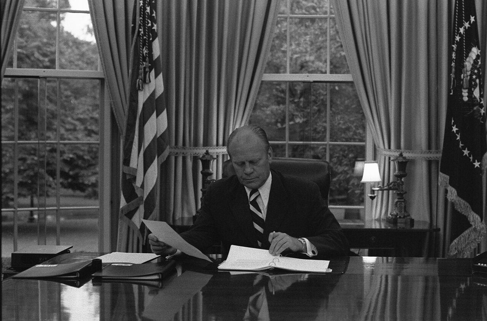
#122 · hero · horizontal · 4000x2637 · Public domain File:President Gerald R. Ford Working in the Oval Office on the First Day of His Administration - NARA - 45644289.jpg Unknown authorUnknown author or not provided · 1280x844 https://commons.wikimedia.org/wiki/File:President_Gerald_R._Ford_Working_in_the_Oval_Office_on_the_First_Day_of_His_Administration_-_NARA_-_45644289.jpg
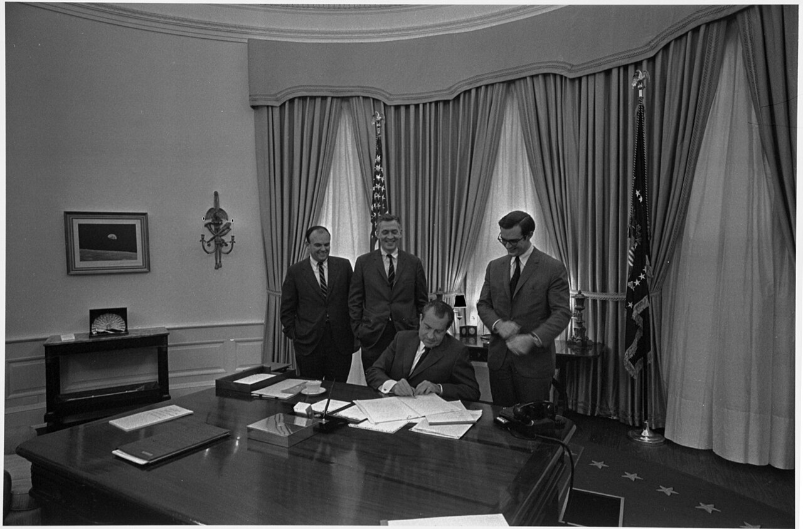
#123 · hero · horizontal · 8242x5433 · Public domain File:President Richard Nixon Working at the Oval Office Desk - DPLA - 52612974875771a02fcbd73d7c762ceb.jpg President (1969-1974 : Nixon). White House Photo Office. 1969-1974, General Services Administration. National Archives and Records Service. Office of Presidential Libraries. Office of Presidential Papers. 1/20/1969-ca. 12/1974 · 1280x844 https://commons.wikimedia.org/wiki/File:President_Richard_Nixon_Working_at_the_Oval_Office_Desk_-_DPLA_-_52612974875771a02fcbd73d7c762ceb.jpg
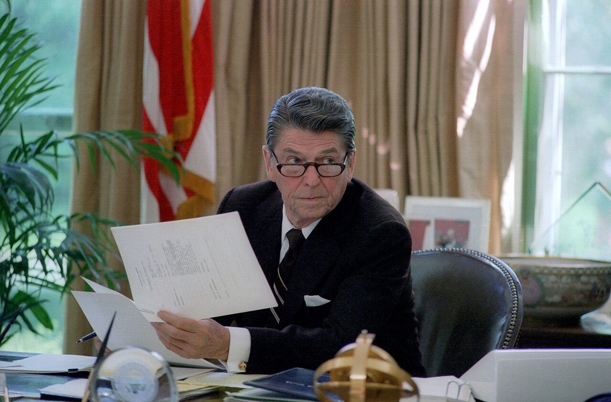
#124 · hero · horizontal · 4000x2633 · Public domain File:President Ronald Reagan Wearing Glasses While Working at His Desk in The Oval Office - DPLA - a844794591e2503df2542613c50b8782.jpg President (1981-1989 : Reagan). White House Photographic Office. 1981-1989 · 1280x843 https://commons.wikimedia.org/wiki/File:President_Ronald_Reagan_Wearing_Glasses_While_Working_at_His_Desk_in_The_Oval_Office_-_DPLA_-_a844794591e2503df2542613c50b8782.jpg
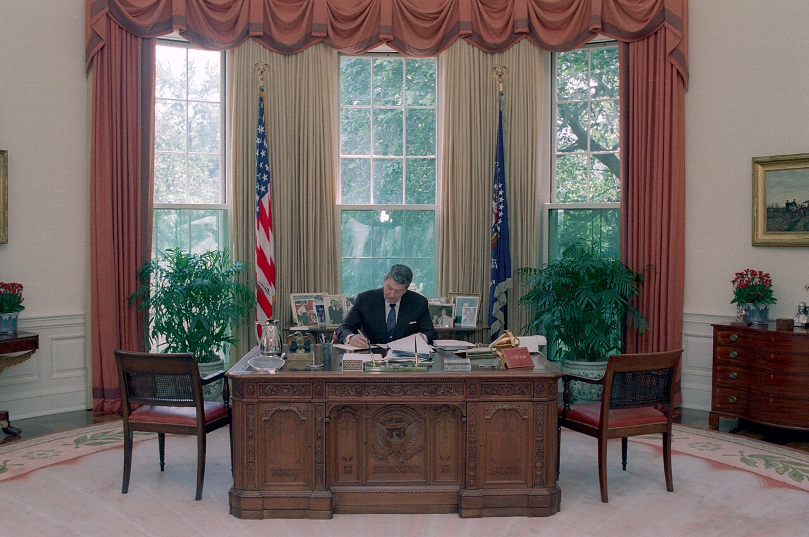
#125 · hero · horizontal · 4000x2658 · Public domain File:President Ronald Reagan Working at His Desk in The Oval Office - DPLA - 0bed851799b452dabc3d1dc32b77eb6b.jpg President (1981-1989 : Reagan). White House Photographic Office. 1981-1989 · 1280x851 https://commons.wikimedia.org/wiki/File:President_Ronald_Reagan_Working_at_His_Desk_in_The_Oval_Office_-_DPLA_-_0bed851799b452dabc3d1dc32b77eb6b.jpg
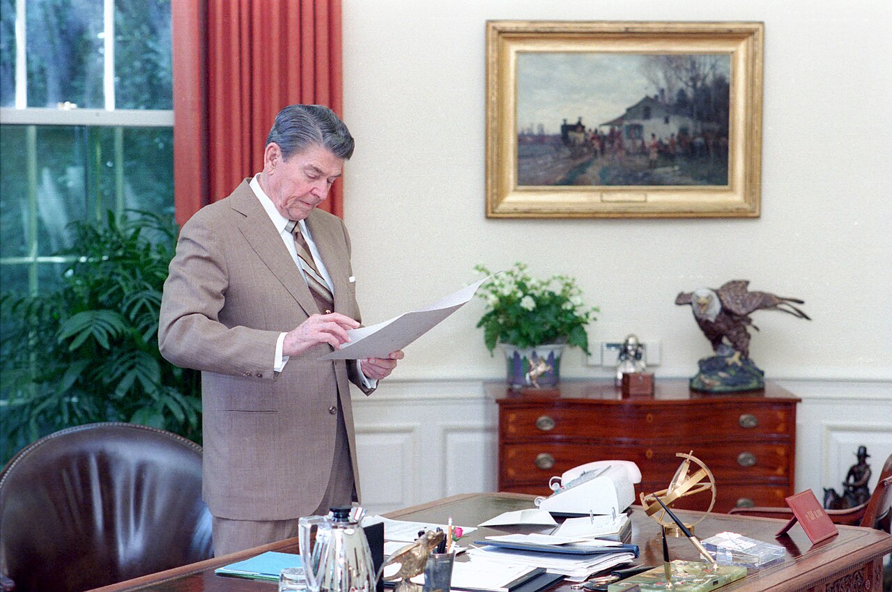
#126 · hero · horizontal · 4000x2655 · Public domain File:President Ronald Reagan Working at His Desk in The Oval Office - DPLA - 0ed418380a6e244d059899e4d2c190cd.jpg President (1981-1989 : Reagan). White House Photographic Office. 1981-1989 · 1280x850 https://commons.wikimedia.org/wiki/File:President_Ronald_Reagan_Working_at_His_Desk_in_The_Oval_Office_-_DPLA_-_0ed418380a6e244d059899e4d2c190cd.jpg
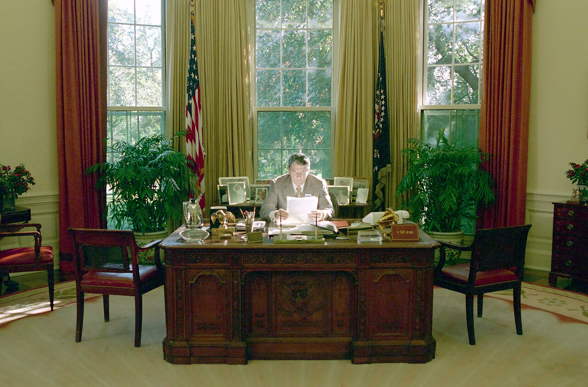
#127 · hero · horizontal · 4000x2633 · Public domain File:President Ronald Reagan Working in Oval Office - DPLA - 0680604f9c384abebe93be5d2f18c018.jpg President (1981-1989 : Reagan). White House Photographic Office. 1981-1989 · 1280x843 https://commons.wikimedia.org/wiki/File:President_Ronald_Reagan_Working_in_Oval_Office_-_DPLA_-_0680604f9c384abebe93be5d2f18c018.jpg
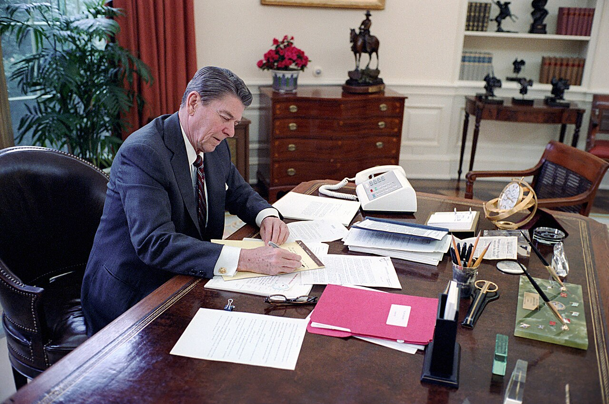
#128 · hero · horizontal · 4000x2656 · Public domain File:President Ronald Reagan Working on The State of The Union Address at His Desk in The Oval Office - DPLA - 062dd4ed78584d385f4bfc24288ab70b.jpg President (1981-1989 : Reagan). White House Photographic Office. 1981-1989 · 1280x850 https://commons.wikimedia.org/wiki/File:President_Ronald_Reagan_Working_on_The_State_of_The_Union_Address_at_His_Desk_in_The_Oval_Office_-_DPLA_-_062dd4ed78584d385f4bfc24288ab70b.jpg
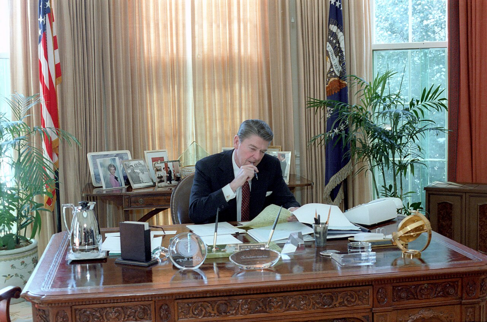
#129 · hero · horizontal · 4000x2647 · Public domain File:President Ronald Reagan Working on The State of The Union Address at His Oval Office Desk - DPLA - 8c603e004413ff4e51997a991da9f36c.jpg President (1981-1989 : Reagan). White House Photographic Office. 1981-1989 · 1280x847 https://commons.wikimedia.org/wiki/File:President_Ronald_Reagan_Working_on_The_State_of_The_Union_Address_at_His_Oval_Office_Desk_-_DPLA_-_8c603e004413ff4e51997a991da9f36c.jpg
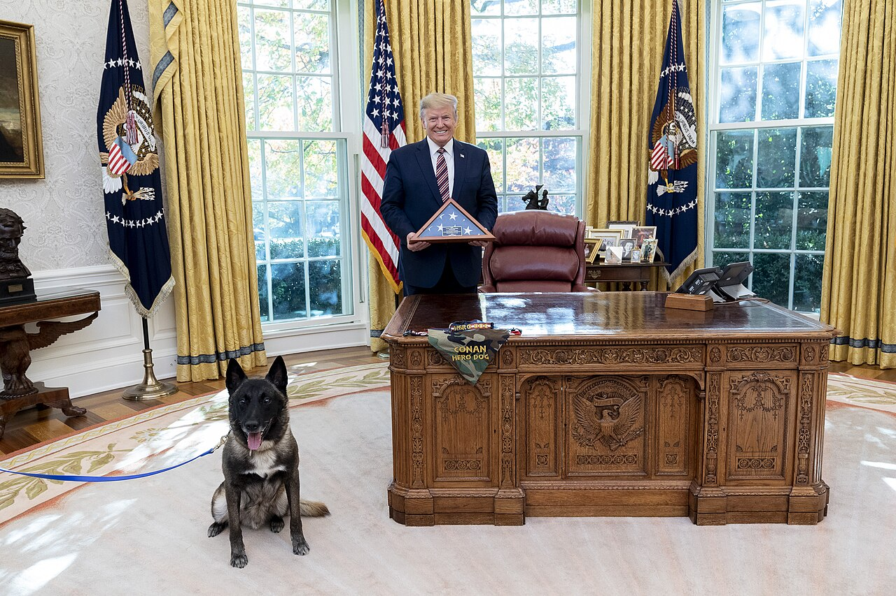
#130 · hero · horizontal · 3000x2000 · Public domain File:President Trump Welcomes Conan the Military Working Dog to the White House (49124590976).jpg The White House from Washington, DC · 1280x853 https://commons.wikimedia.org/wiki/File:President_Trump_Welcomes_Conan_the_Military_Working_Dog_to_the_White_House_(49124590976).jpg
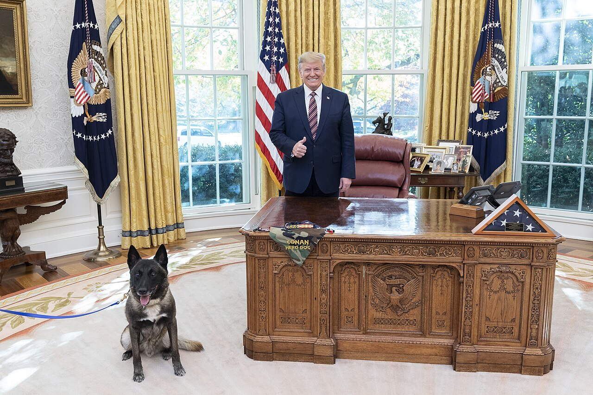
#131 · hero · horizontal · 3000x2000 · Public domain File:President Trump Welcomes Conan the Military Working Dog to the White House (49124591271).jpg The White House from Washington, DC · 1280x853 https://commons.wikimedia.org/wiki/File:President_Trump_Welcomes_Conan_the_Military_Working_Dog_to_the_White_House_(49124591271).jpg
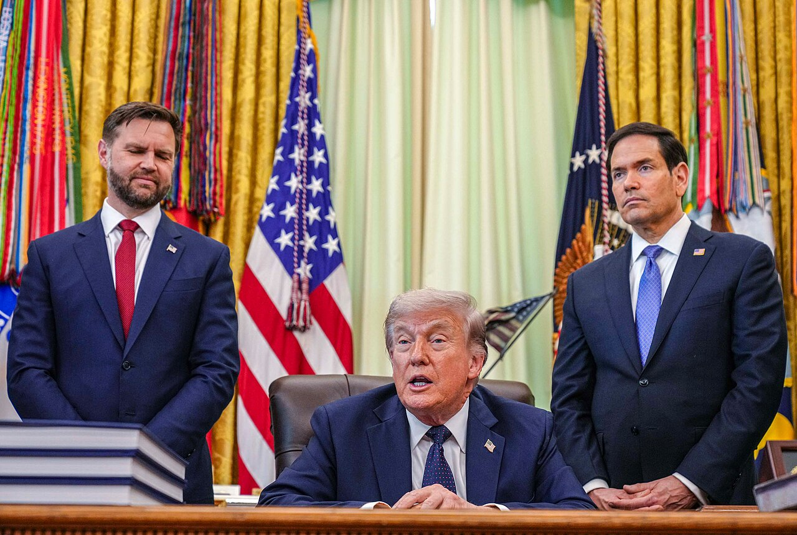
#132 · hero · horizontal · 3000x2018 · Public domain File:Secretary Rubio Attends Working-Level Peace Talks with Israel and Lebanon - 55233552107.jpg U.S. Department of State · 1280x861 https://commons.wikimedia.org/wiki/File:Secretary_Rubio_Attends_Working-Level_Peace_Talks_with_Israel_and_Lebanon_-_55233552107.jpg
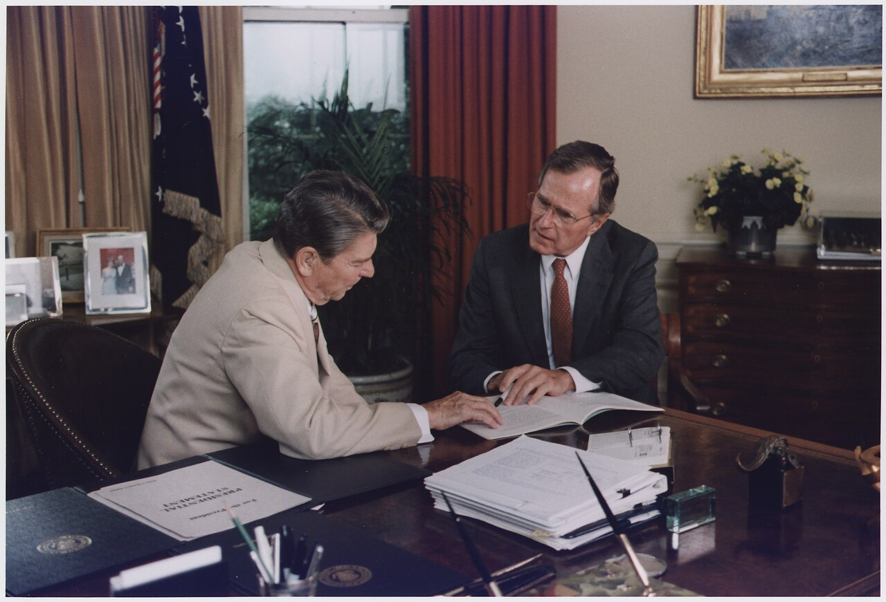
#133 · hero · horizontal · 3000x2042 · Public domain File:Vice President Bush and President Reagan working in the Oval Office - NARA - 186367.tif David Valdez · 1280x871 https://commons.wikimedia.org/wiki/File:Vice_President_Bush_and_President_Reagan_working_in_the_Oval_Office_-_NARA_-_186367.tif
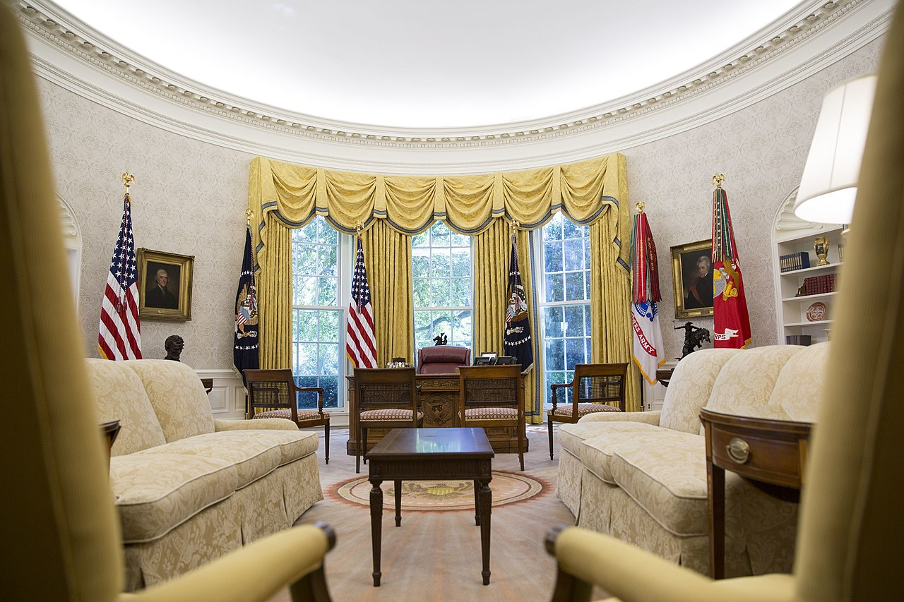
#134 · hero · horizontal · 3000x2000 · Public domain File:View of Oval Office in 2017.jpg White House · 1280x853 https://commons.wikimedia.org/wiki/File:View_of_Oval_Office_in_2017.jpg#135 · vertical · vertical · 1800x2286 · Public domain File:Young woman working.jpg Bill Branson (Photographer) · 1280x1626 https://commons.wikimedia.org/wiki/File:Young_woman_working.jpg
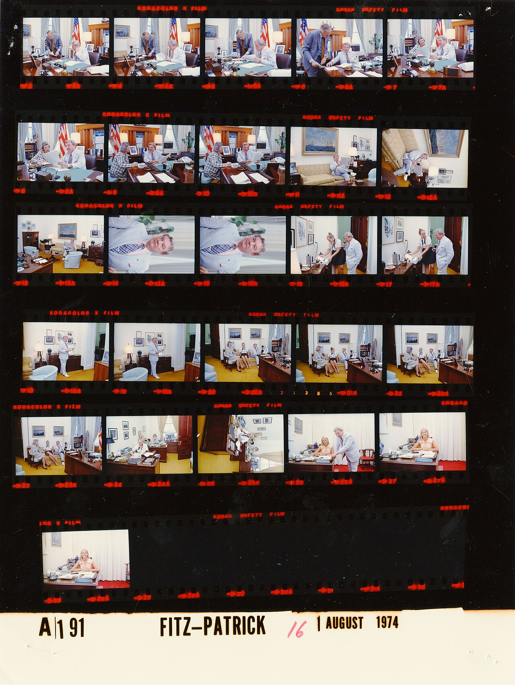
#136 · vertical · vertical · 1690x2243 · Public domain File:Ford A0191 NLGRF photo contact sheet (1974-08-16)(Gerald Ford Library).jpg White House Photographic Office (WHPO) - Fitz-Patrick · 1280x1699 https://commons.wikimedia.org/wiki/File:Ford_A0191_NLGRF_photo_contact_sheet_(1974-08-16)(Gerald_Ford_Library).jpg
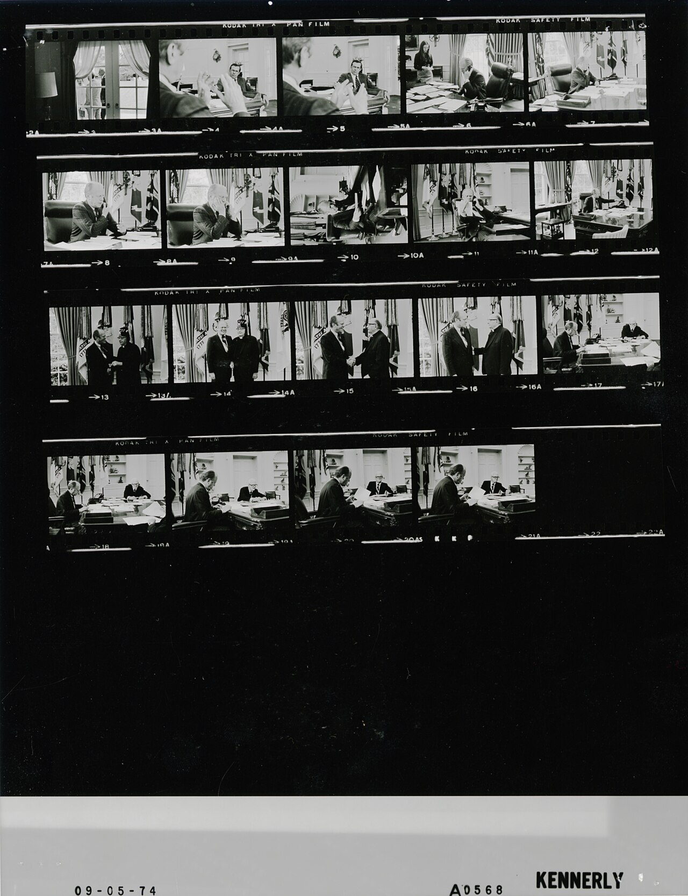
#137 · vertical · vertical · 1669x2174 · Public domain File:Ford A0568 NLGRF photo contact sheet (1974-09-05)(Gerald Ford Library).jpg David Hume Kennerly · 1280x1667 https://commons.wikimedia.org/wiki/File:Ford_A0568_NLGRF_photo_contact_sheet_(1974-09-05)(Gerald_Ford_Library).jpg
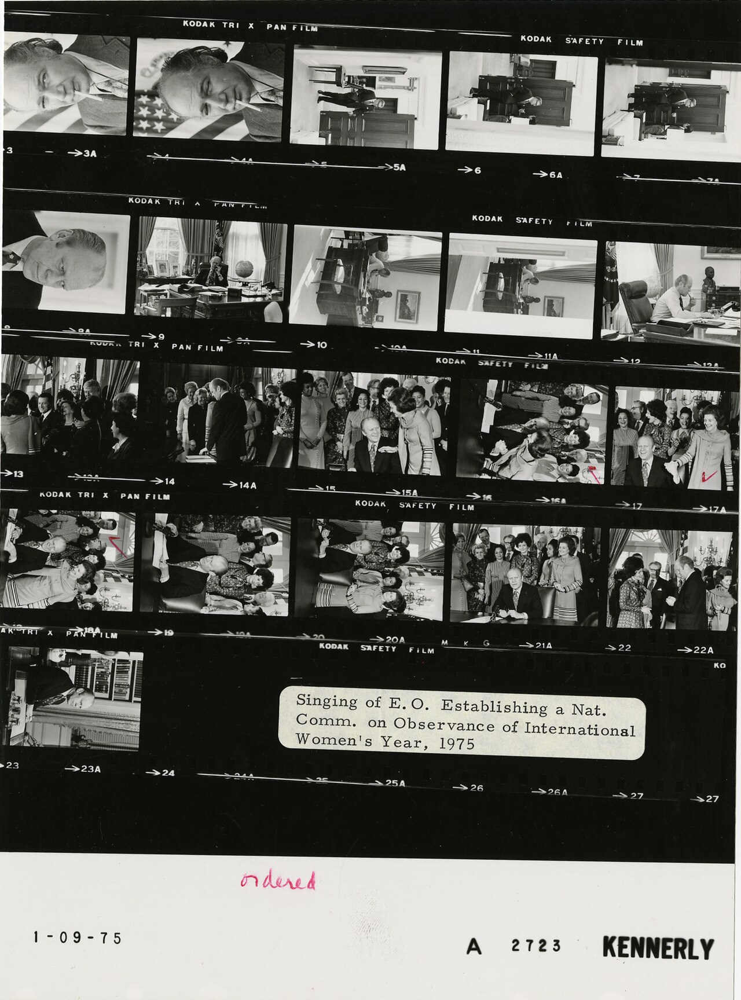
#138 · vertical · vertical · 1416x1911 · Public domain File:Ford A2723 NLGRF photo contact sheet (1975-01-09)(Gerald Ford Library).jpg David Hume Kennerly · 1280x1727 https://commons.wikimedia.org/wiki/File:Ford_A2723_NLGRF_photo_contact_sheet_(1975-01-09)(Gerald_Ford_Library).jpg
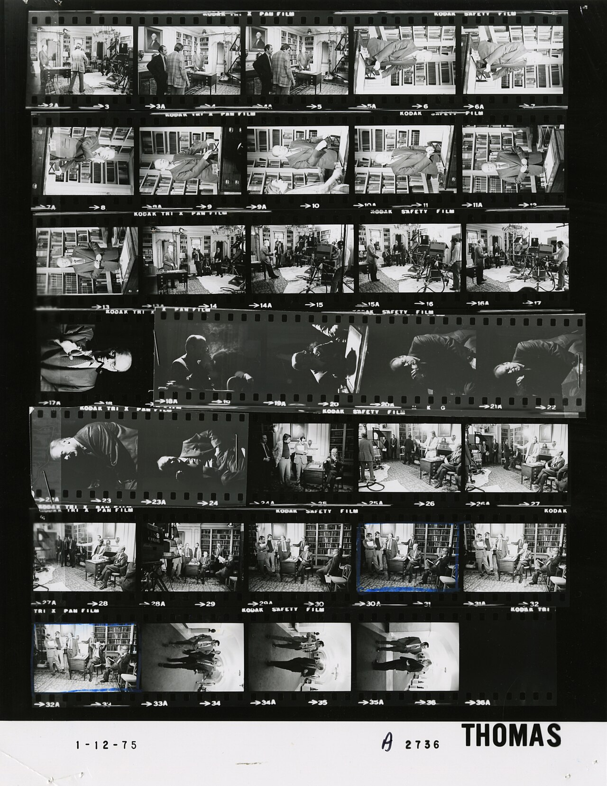
#139 · vertical · vertical · 1686x2184 · Public domain File:Ford A2736 NLGRF photo contact sheet (1975-01-12)(Gerald Ford Library).jpg White House Photographic Office (WHPO) - Thomas · 1280x1658 https://commons.wikimedia.org/wiki/File:Ford_A2736_NLGRF_photo_contact_sheet_(1975-01-12)(Gerald_Ford_Library).jpg
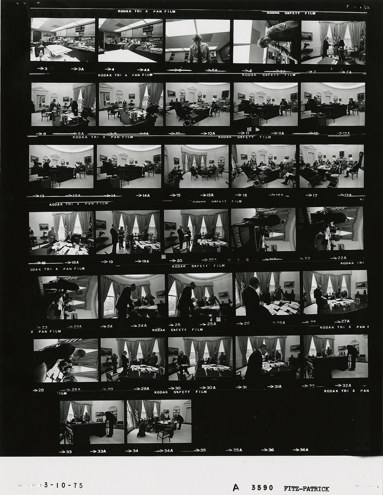
#140 · vertical · vertical · 1695x2185 · Public domain File:Ford A3590 NLGRF photo contact sheet (1975-03-10)(Gerald Ford Library).jpg White House Photographic Office (WHPO) - Fitz-Patrick · 1280x1650 https://commons.wikimedia.org/wiki/File:Ford_A3590_NLGRF_photo_contact_sheet_(1975-03-10)(Gerald_Ford_Library).jpg
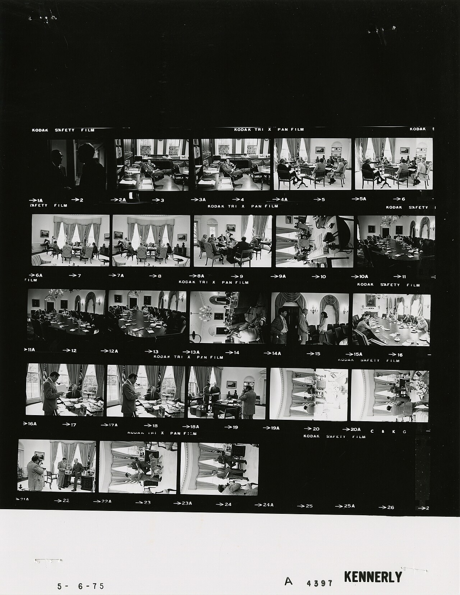
#141 · vertical · vertical · 1690x2188 · Public domain File:Ford A4397 NLGRF photo contact sheet (1975-05-05)(Gerald Ford Library).jpg David Hume Kennerly · 1280x1657 https://commons.wikimedia.org/wiki/File:Ford_A4397_NLGRF_photo_contact_sheet_(1975-05-05)(Gerald_Ford_Library).jpg
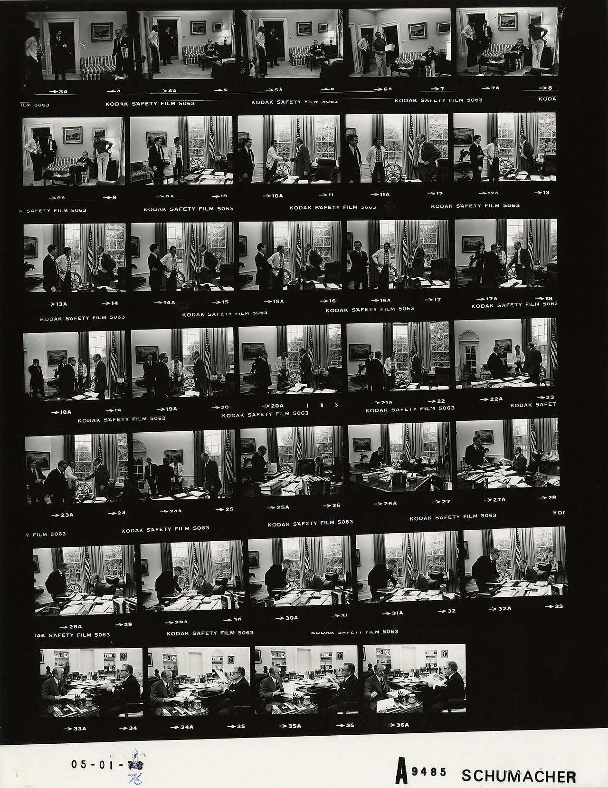
#142 · vertical · vertical · 1686x2182 · Public domain File:Ford A9485 NLGRF photo contact sheet (1976-05-02)(Gerald Ford Library).jpg White House Photographic Office (WHPO) - Schumacher · 1280x1657 https://commons.wikimedia.org/wiki/File:Ford_A9485_NLGRF_photo_contact_sheet_(1976-05-02)(Gerald_Ford_Library).jpg
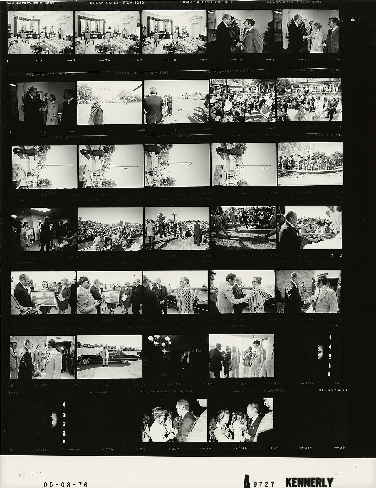
#143 · vertical · vertical · 1692x2193 · Public domain File:Ford A9727 NLGRF photo contact sheet (1976-05-07)(Gerald Ford Library).jpg David Hume Kennerly · 1280x1659 https://commons.wikimedia.org/wiki/File:Ford_A9727_NLGRF_photo_contact_sheet_(1976-05-07)(Gerald_Ford_Library).jpg
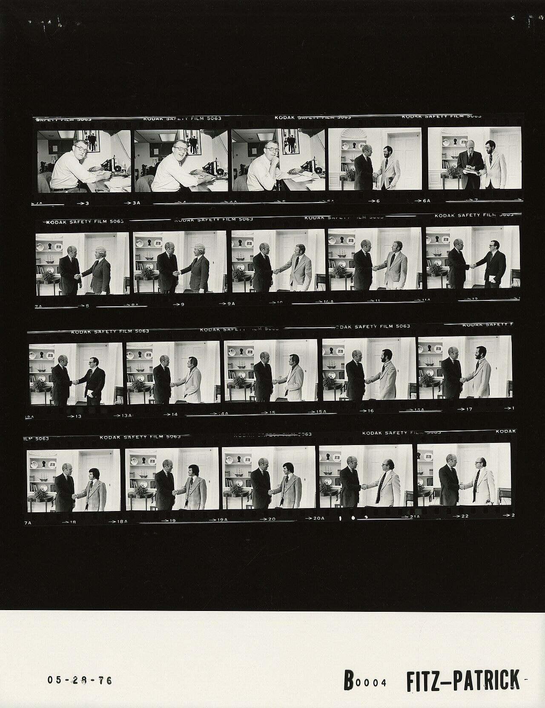
#144 · vertical · vertical · 1671x2172 · Public domain File:Ford B0004 NLGRF photo contact sheet (1976-05-28)(Gerald Ford Library).jpg White House Photographic Office (WHPO) - Fitz-Patrick · 1280x1664 https://commons.wikimedia.org/wiki/File:Ford_B0004_NLGRF_photo_contact_sheet_(1976-05-28)(Gerald_Ford_Library).jpg
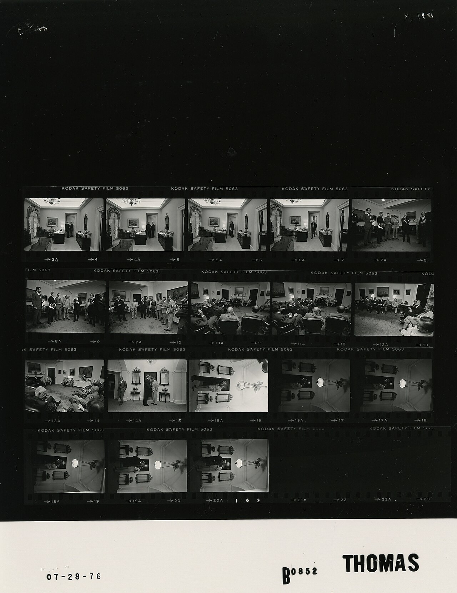
#145 · vertical · vertical · 1665x2161 · Public domain File:Ford B0852 NLGRF photo contact sheet (1976-07-28)(Gerald Ford Library).jpg White House Photographic Office (WHPO) - Thomas · 1280x1661 https://commons.wikimedia.org/wiki/File:Ford_B0852_NLGRF_photo_contact_sheet_(1976-07-28)(Gerald_Ford_Library).jpg
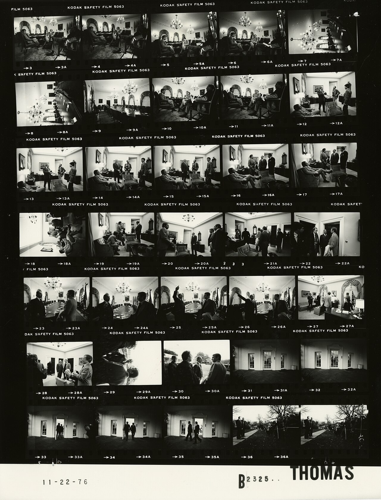
#146 · vertical · vertical · 2491x3265 · Public domain File:Ford B2325 NLGRF photo contact sheet (1976-11-22)(Gerald Ford Library).jpg White House Photographic Office (WHPO) - Thomas · 1280x1678 https://commons.wikimedia.org/wiki/File:Ford_B2325_NLGRF_photo_contact_sheet_(1976-11-22)(Gerald_Ford_Library).jpg
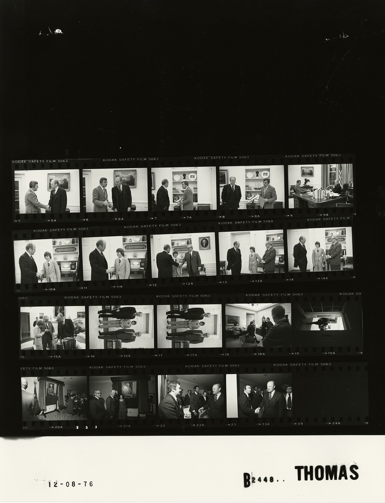
#147 · vertical · vertical · 2521x3289 · Public domain File:Ford B2448 NLGRF photo contact sheet (1976-12-08)(Gerald Ford Library).jpg White House Photographic Office (WHPO) - Thomas · 1280x1670 https://commons.wikimedia.org/wiki/File:Ford_B2448_NLGRF_photo_contact_sheet_(1976-12-08)(Gerald_Ford_Library).jpg
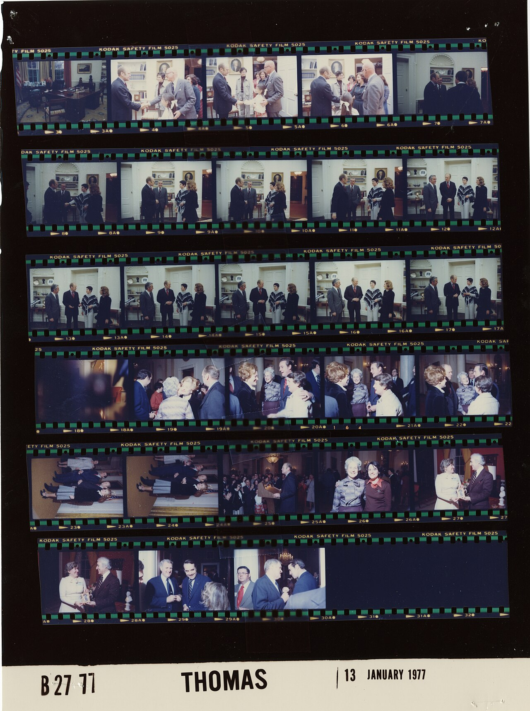
#148 · vertical · vertical · 2491x3337 · Public domain File:Ford B2777 NLGRF photo contact sheet (1977-01-14)(Gerald Ford Library).jpg White House Photographic Office (WHPO) - Thomas · 1280x1715 https://commons.wikimedia.org/wiki/File:Ford_B2777_NLGRF_photo_contact_sheet_(1977-01-14)(Gerald_Ford_Library).jpg
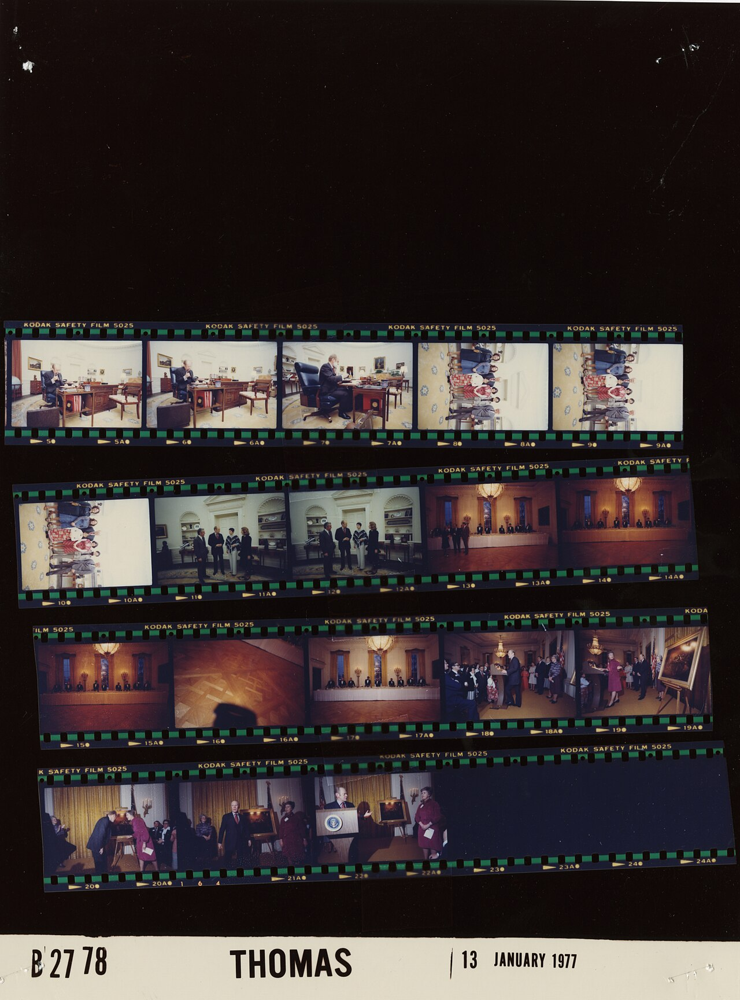
#149 · vertical · vertical · 2449x3307 · Public domain File:Ford B2778 NLGRF photo contact sheet (1977-01-14)(Gerald Ford Library).jpg White House Photographic Office (WHPO) - Thomas · 1280x1728 https://commons.wikimedia.org/wiki/File:Ford_B2778_NLGRF_photo_contact_sheet_(1977-01-14)(Gerald_Ford_Library).jpg
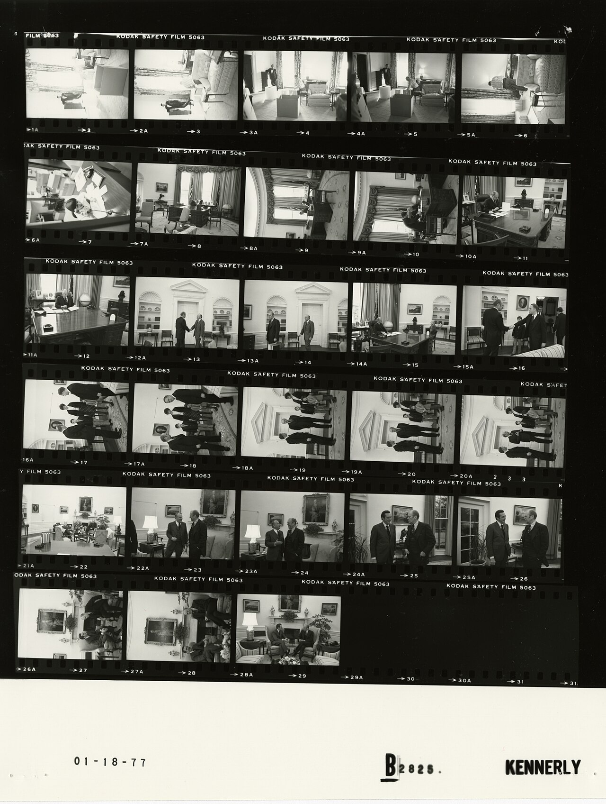
#150 · vertical · vertical · 2489x3297 · Public domain File:Ford B2825 NLGRF photo contact sheet (1977-01-18)(Gerald Ford Library).jpg David Hume Kennerly · 1280x1696 https://commons.wikimedia.org/wiki/File:Ford_B2825_NLGRF_photo_contact_sheet_(1977-01-18)(Gerald_Ford_Library).jpg
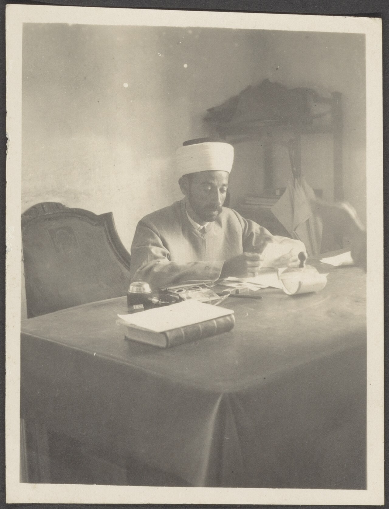
#151 · vertical · vertical · 1577x2060 · Public domain File:Man working at a desk, NINO F Scholten photographic print 19 0756.tiff Frank Scholten · 1280x1672 https://commons.wikimedia.org/wiki/File:Man_working_at_a_desk,_NINO_F_Scholten_photographic_print_19_0756.tiff
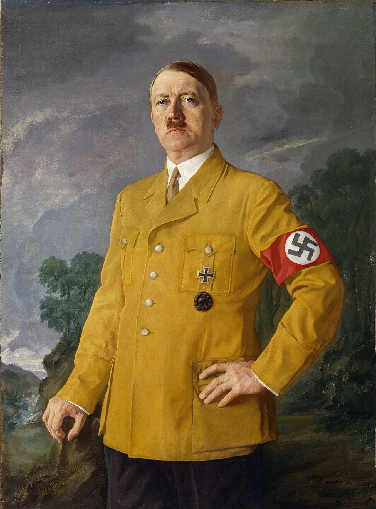
#152 · vertical · vertical · 2475x3351 · Public domain File:Der Führer Gemälde Portrait painting of Adolf Hitler by Heinrich Knirr 1937 No known copyright restrictions (artist died in 1944) Imperial War Museum London.jpg Marc Beech · 1280x1733 https://commons.wikimedia.org/wiki/File:Der_F%C3%BChrer_Gem%C3%A4lde_Portrait_painting_of_Adolf_Hitler_by_Heinrich_Knirr_1937_No_known_copyright_restrictions_(artist_died_in_1944)_Imperial_War_Museum_London.jpg